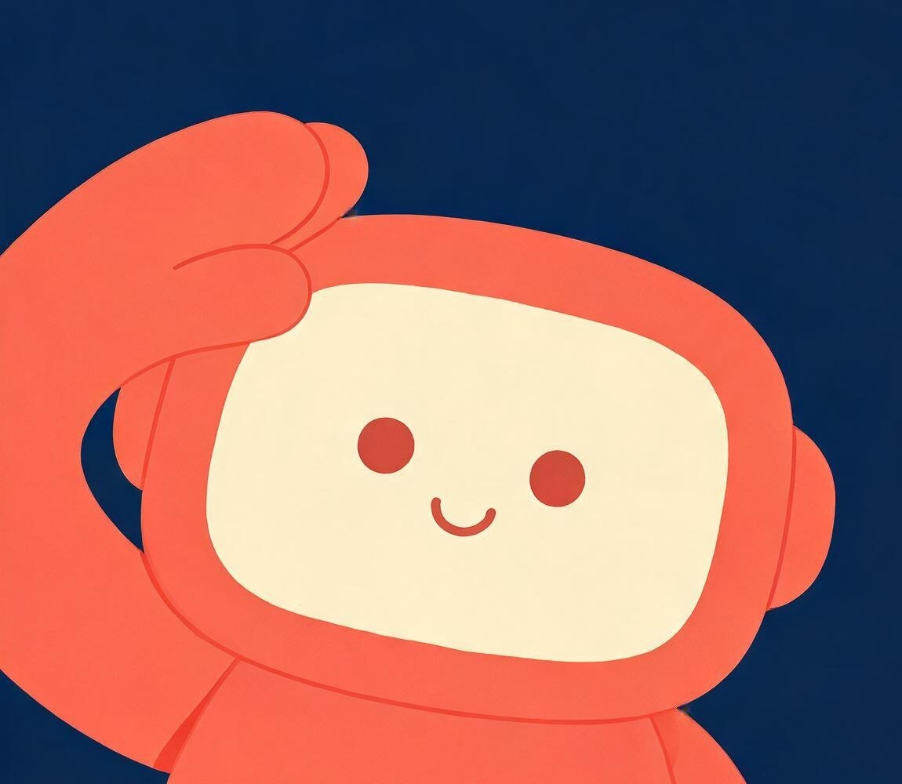
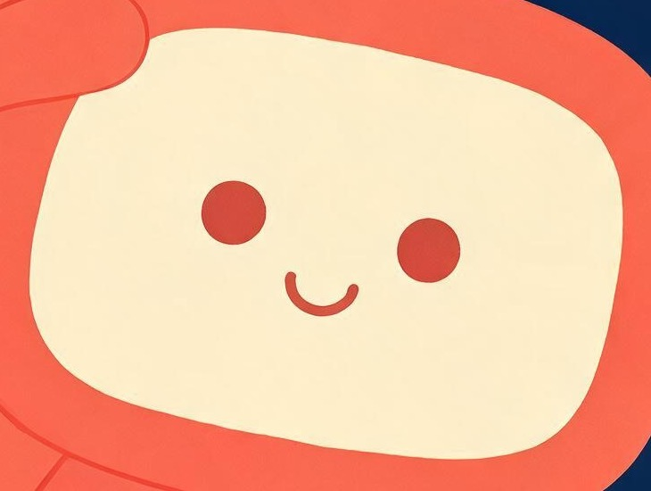

形象定稿
经 A（猫头鹰）· B（狮子）· C（机器人） 三个方向共 12 款候选比选，确定 C 方向 4 号 —— 敬礼姿态机器人 为唯一主形象。其造型、配色、面部系统与默认姿态自本文件发布起全部锁定，任何后续使用与衍生不得改变锁定要素。
为什么是它
敬礼 = 「收到，马上办」
在 12 款候选中唯一具备明确服务语义的姿态：既传递值守与致敬，又传递即时响应——正是 Agent 助手的角色本质。
左形右空的标准像
形象居左、右侧留出成片负空间，天然适配横排 Logo 的「图形 + 字标」结构，也适配界面文案排版，无需二次裁切。
大块面，缩不失形
两头身、无细节依赖的块面造型，缩至 32px 图标尺寸轮廓与表情依然清晰——这是入口吉祥物的硬性前提。
命名建议：小橙
「橙」一字三关：橙（珊瑚橙主色）、诚（以诚意服务）、成（助数据达成）。谐音语义完整覆盖「色彩识别 — 服务态度 — 数据价值」三层，且语感亲切不失分寸，适合政务语境的对外传播。（命名为建议项，可在保持音节结构的前提下替换。）

设计命题与理念内核
政府数据大屏的气质，长期存在一个两难：权威专业与亲和服务难以兼得——做得严肃，就成了冰冷监控室；做得活泼，又失了政务分寸。「小橙」的解法不是在两者间取中，而是让秩序感与温度各占各的位置：姿态负责秩序，形与色负责温度。
敬礼 —— 服务者的姿态 ORDER
不是军礼的严苛，是助手的待命。在政府语境中，敬礼传递忠诚值守、使命必达；在用户语境中，它就是「收到，马上办」。同一个动作，同时对两种受众说恰当的话——这是政务 AI 最需要的分寸感，也是 12 款候选中唯有此姿态具备的语义精度。
屏幕脸 —— 大屏的同构化身 ISOMORPH
它的脸，就是一块屏幕。大屏展示数据，它展示表情——同一载体的两种尺度。数据大屏因此获得了一个「人格化分身」：屏中有它，它是屏的化身。
更关键的是工程含义：眼睛与笑容画在屏幕之内，意味着表情可编程——Agent 的一切状态（聆听、思考、分析完成、预警）只需重绘屏幕内容，身体结构永远不变。形象的一致性由此获得结构性保障，而不是靠美术纪律硬撑。
圆润 —— 有温度的技术 WARMTH
全曲率、无棱角、无描边、无渐变。政务场景的 AI 应用最忌「被监控感」，圆润把技术从「系统」的心理位置拉到「同事」的心理位置；再以珊瑚橙的暖调收尾——数据于是有了体温。
视觉基因规范
3.1 配色：四色系统
全形象仅四色，全部实测自定稿原图，色相关系锁定。占比哲学：深空托暖橙——大面积冷静、小面积温暖，正是数据大屏本身的视觉节奏。
全图色彩面积占比（实测）· 深海蓝 70% / 珊瑚橙 22% / 奶油白 7% / 珊瑚深红 1%
色彩工程：大屏可读性实测
形象配色不是审美判断，而是通过了 WCAG 对比度工程校验——深色大屏上天然高可读，形象底色又与大屏底色同族，可无缝融入版面。
3.2 造型语言
- 胶囊体几何身体为超椭圆/胶囊体，头部为圆角矩形屏幕——整形象仅两种基础形，无第三形。
- 全圆角，零尖角所有转折均为圆角；最小圆角半径与眼睛直径保持同一曲率模数，全形曲率一致。
- 无描边 · 无渐变 · 无高光 · 无纹理纯色块面。任何描边、投影、质感添加均视为破坏锁定。
- 两头身比例头部（含耳凸）≈ 身体，Q 版比例是 32px 可读的结构基础。
- 耳凸 = 聆听语义头部两侧的圆形凸起是机器属性的识别点，语义为「聆听」——呼应 Agent 的对话本质。
- 左置构图 + 右侧负空间标准像固定构图；负空间为字标与文案预留，不得镜像翻转使用。
3.3 面部系统：最小可读表情集

- 三个元素构成全部表情圆点眼 ×2 + 单弧线笑。不做加法——不添加眉毛、腮红、嘴部细节。
- 表情 = 屏幕内容重绘眼与笑画在屏幕内，一切状态变化只发生在屏幕内；身体结构恒定。
- 眼径 = 曲率模数眼睛直径与全形象圆角半径统一，是造型的基本度量单位。
- 眨眼是唯一常驻动画待机状态仅允许眨眼；不引入身体摇摆、漂浮等位移动画。
3.4 姿态语义
- 敬礼 = 默认姿态开机、待机、主 Logo、门户入口等一切「标准场景」均使用敬礼姿态；它是形象的第二签名。
- 手套型手，无手指手部为圆润块面，刻意不画手指——保证小尺寸下的可读性与圆润语感的一致。
- 语义三字：收 · 命 · 致收到指令（响应）、使命必达（执行）、致敬用户（服务）。
应用逻辑：大屏 × Agent 平台
4.1 主 Logo
横版为标准形：形象居左，字标居右——定稿构图的右侧负空间即为此而生。深色界面直接使用原图；浅色场景下不得透底抠图，须以深海蓝圆角容器承载，保持底色完整性。
4.2 Agent 入口与状态表达
屏幕脸可独立拆出，作为 favicon、对话入口按钮与状态图标使用。Agent 的运行状态全部通过屏幕内容表达，以下为状态原则定义（实施时从面部系统推导，不新增形象元素）：
| Agent 状态 | 屏幕表达原则 | 语义 |
|---|---|---|
| 待机 / 开机 | 默认圆点眼 + 弧线笑标准像，即敬礼姿态本身 | 随时待命 |
| 聆听中 | 圆眼略放大，保持微笑仅眼部尺度变化 | 我在听 |
| 思考 / 分析中 | 眯眼（横向弧线）可配合屏幕内呼吸式亮度动画 | 正在处理 |
| 分析完成 | 弯月笑眼 + 加深笑容弧度答成之喜 | 结果好了 |
| 预警 / 提醒 | 圆角化警示符号置于屏内符号须服从全圆角与三色约束 | 请注意 |
4.3 大屏融合
- 底色同族形象背景深海蓝与大屏深色底同色系，形象可直接置入版面而不产生「贴图感」。
- 主色同板珊瑚橙取自大屏橙色系可视化色板——形象不是「外来吉祥物」，而是从大屏自己的色板里长出来的。
- 动效纪律入场敬礼一次 → 待机眨眼。禁止身体变形、换装、换色、位移漂浮。
4.4 尺度体系
从 1920px 主视觉到 32px favicon 的全链路实测——块面造型在各级尺寸下轮廓与表情均保持可读：
延展纪律
形象已锁定，衍生须慢。按既定策略：不急于扩展动作库——先让屏幕脸学会「说话」，再考虑让身体动起来。以下红线清单适用于一切后续创作：
必须保持 / ALWAYS
- 屏幕脸结构：圆角矩形屏 + 圆点眼 + 弧线笑
- 四色系统与「深空托暖橙」占比哲学
- 无描边、无渐变、无高光的纯扁平语言
- 敬礼为默认姿态与开机姿态
- 左置构图、不镜像、不旋转倾斜
禁止发生 / NEVER
- 添加描边、投影、渐变、纹理、高光
- 改变身体结构、比例或手部形态
- 引入第五种颜色或改变色值
- 拟人化升级（手指、衣物、道具叠加）
- 在未过「服务语义检验」时新增动作
衍生决策顺序
- 第一步 · 服务语义检验任何新元素先回答：它在表达什么服务？答不出，不做。
- 第二步 · 表情优先于动作Agent 状态表情（屏幕内变化）是第一优先级衍生，也是唯一贴合后台主体的衍生方向。
- 第三步 · 动作最后动作库只有在表情系统跑通、且每个动作都有明确服务语义后才立项。
- 每一步 · 32px 测试任何衍生稿必须通过 32px 缩小可读性验证，否则回炉。
形象已定稿锁定。下一步不是更多动作——
是让屏幕脸学会说话：Agent 状态表情系统，才是真正贴合后台主体的衍生。